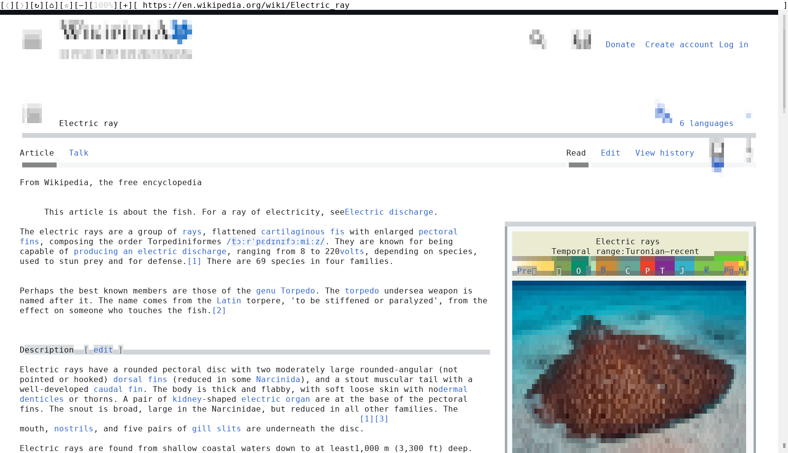
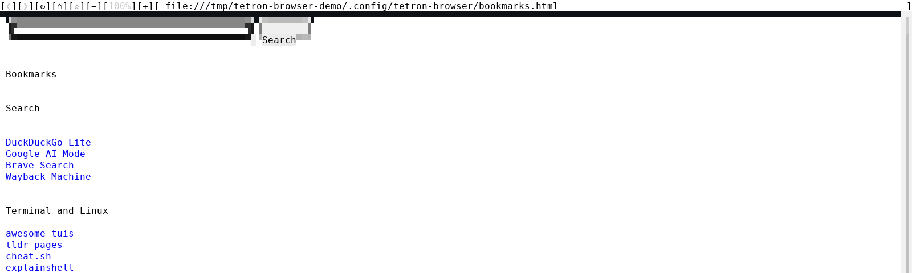

The real web, in a terminal.
tetron-browser renders pages with Chromium, so JavaScript, logins, video and modern layouts work, and draws them as truecolor blocks with a mouse. In any terminal, over ssh, or on a bare console with no window server.
Install
Debian, Ubuntu and their derivatives, amd64
sudo curl -fsSLo /usr/share/keyrings/tetronos-archive-keyring.gpg https://tetronos.github.io/apt/tetronos-archive-keyring.gpg
sudo curl -fsSLo /etc/apt/sources.list.d/tetronos.sources https://tetronos.github.io/apt/tetronos.sources
sudo apt update && sudo apt install tetron-browserThen run tetron-browser, or twww for short. Other ways: install.

Why
Text browsers can not run the scripts most sites need. Graphical browsers need a display. tetron-browser needs a terminal.
It is Chromium underneath: JavaScript, cookies and logins, web apps, CSS layout, images and video.
Runs on a server over ssh, on a Linux console with no X11 or Wayland, or inside tmux and tetron-wm.
Click links and buttons, scroll with the wheel, select text fields. Keyboard input goes to the page.
Only the tab you look at is a live page. Background tabs keep their address, title and scroll position.
Use
[❮][❯] back, forward [↻] reload [⌂] home page [☆] bookmark this page ([★] removes it) [−][100%][+] zoom out, reset, in click the address to edit it, Enter to go
middle-click open a link in a background tab right-click link and image menu Alt+1..9 switch tab Alt+W close tab Shift+wheel scroll sideways
Open in new tab, copy the address to the terminal clipboard (OSC 52), save to your download folder, or open in the default app.
A click on a magnet: or mailto: link, or on a file such as a .torrent or a PDF, hands it to xdg-open.
The start page is a search box over your bookmarks: a plain Netscape bookmarks file you can edit or import into any browser.
Tabs are saved and reopen on the next start. A URL on the command line opens as a new tab.

Compare
| lynx, w3m | browsh | tetron-browser | |
|---|---|---|---|
| Engine | its own HTML parser | Firefox, run headless beside it | Chromium, built in |
| JavaScript | no | yes | yes |
| Images and video | lynx no; w3m images in some terminals | yes | yes, drawn in the page |
| Needs installed | nothing else | Firefox | nothing else (one package) |
| Best for | fast reading of simple pages | modern sites | modern sites, mouse driven |
Install
TetronOS ships it, and the tetron-wm suite installer adds it with its essentials collection. Otherwise, on Linux amd64:
The commands at the top. apt upgrade keeps it current. Details: tetronos apt.
Download tetron-browser_<version>-1_amd64.deb from the latest release, check its .sha256, then sudo apt install ./tetron-browser_*.deb.
tetron-browser.linux-amd64.zip from the same release. Unpack it and run tetron-browser in that folder. Needs glibc 2.34 or newer and nss, nspr, expat and alsa.
| bookmarks, home page | ~/.config/tetron-browser/bookmarks.html; another home: TETRON_BROWSER_HOME or the file ~/.config/tetron-browser/home |
| downloads | TETRON_BROWSER_DOWNLOADS, or the file ~/.config/tetron-browser/downloads, default ~/Downloads |
| profile | ~/.config/tetron-browser/ (cookies, logins, cache) |
| tabs | ~/.local/state/tetron-browser/tabs.tsv |
Limits
sudo apt install tetron-browser
tetron-browser https://en.wikipedia.orgAfter adding the tetronos apt repository. Source and releases: github.com/tetronos/tetron-browser